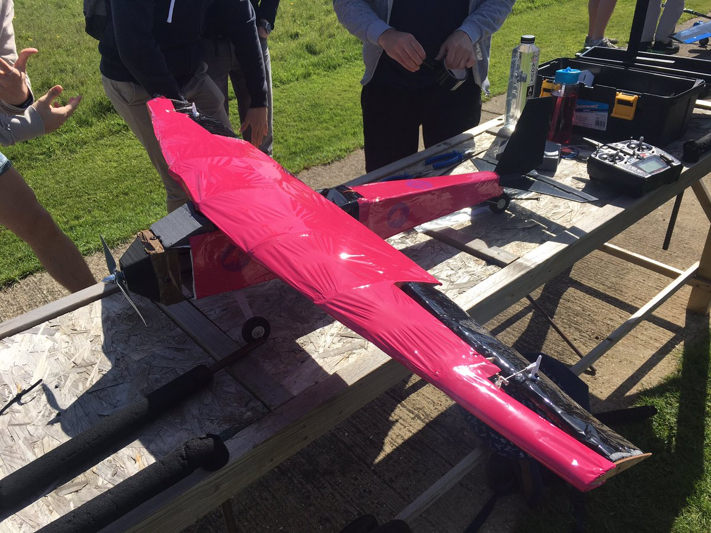
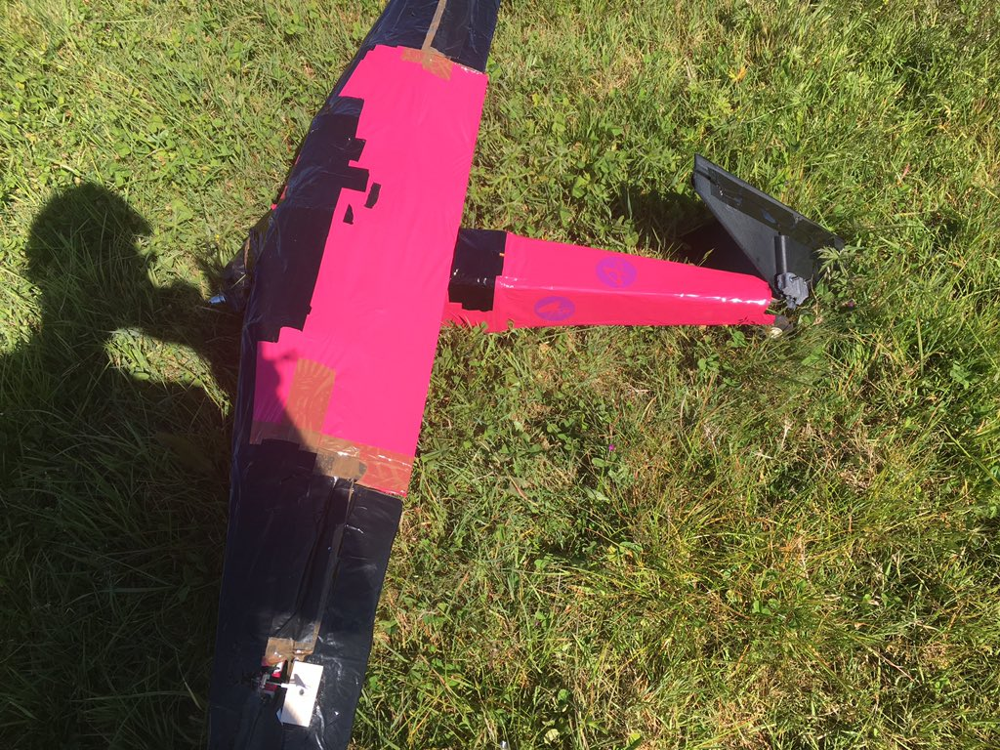

the task for my sophomore group design project was to design, build, and fly an RC aircraft with the goal of maximizing the mass of the water payload within the airframe, keeping the total mass under 7kg. there were several teams, with most using water bottles for storing the water payload.
i was the team lead of 6 others, and given it was the first time designing an aircraft for most of us we chose a pretty standard configuration: tractor prop, high wing, conventional empennage, and trail dragger landing gear, with ailerons, elevators, and a rudder. honestly it was incredibly janky and could have been done far better.
flight day occurred on the 14th of May 2019. it was a very sunny day (and many of us got sunburnt which will makes sense later). we arrived around mid morning at a local flying club, next to a large farm, set up our aircraft then waited in queue for the operators of the flight club to manually check each of the 8 or so aircraft, ensuring they were safe to fly. every team before us had myriad problems pointed out by the people operating the club.
our aircraft had some unexpected manufacturing issues, so our CG ended up being too far back. we ended up moving the battery forward and loading various rocks into the nose. for another team, vibrations during a motor test caused the motor mount to rip itself from the rest of the aircraft (forcing them to be the only team to fly on another day).
a few hours in. our wing needed to be fixed as the gaps between the control surfaces and the rest of the wing was too large, so we just taped up the holes. at this point I believe one aircraft flew and everyone else was fixing problems.
an hour or so later, one aircraft flew and disassembled during flight fairly spectactularly. for another aircraft that flew, its wing disconnected from the body and flew away as the aircraft rammed itself into the ground.
around 6 hours later (hence the sunburns, standing in the sun with no shade) we flew. it took far longer than it should have, just because the operators of the club were frustratingly overzealous in their inspections.
the nose took the brunt of the force on impact, with the prop blades shearing, and the structural supports holding the 3D printed nosecone in place collapsing. in hindsight I think internal structure of the aircraft could have been designed better, since this impact nearly punctured the lipo with a carbon fiber rod.
i suppose either the impact or when the aircraft slammed the tail into the ground after impact caused the rear carbon fiber rod to snap and taking the empennage with it. the entire tail setup was janky because of poor design, so in hindsight far more thought should have been put towards part integration. i am proud to say that the main wing managed to stay attached, after all I did design that connection.
overall, as a first aircraft for the team it wasn’t terrible. however the design was weak, primarily the internal structure of the fuselage, and the nosecone to fuselage and empennage to fuselage connection should have been designed better. it was a fun project regardless.
this is me with the destroyed aircraft, featuring my favorite JPL hat.